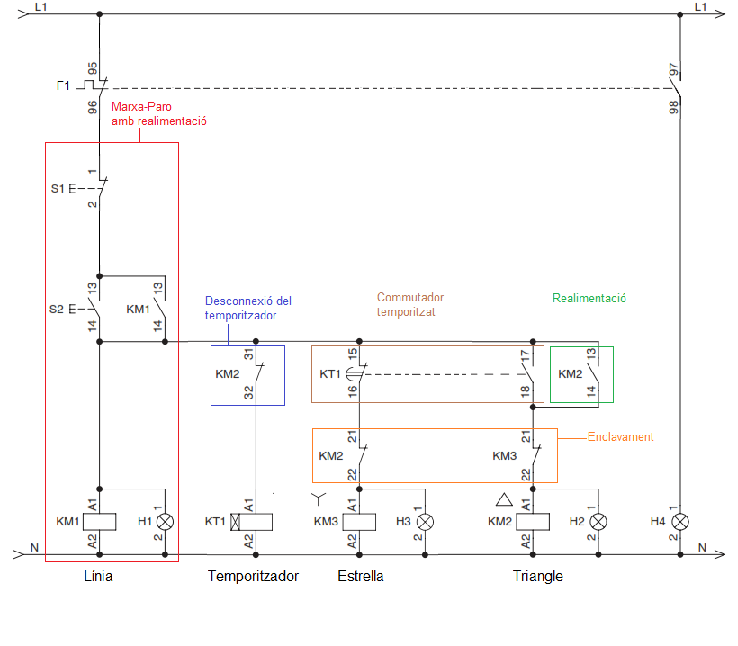
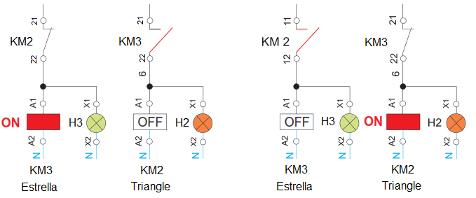

Circuit de Comandament
El circuit de comandame està format pels següents blocs:
"Marxa-Paro" amb realimentació. Mitjançant una botonera Marcha-Paro es controla el contactor de línia (KM1), que és el que connecta el motor a la xarxa elèctrica
Temporitzador: És l'encarregat de commutar de "Estrella" a "Triangle". Al activar KM1, activem també el temporitzador KT i el contactor KM3 (connexió "EStrella") mitjançant el contacte tancat de KT (15-16) . Quan pasa el temps establert (primera fase de l'arranc), els contactes del temporitzador cambien d'estat, activant KM2( connexió "triangle") i desconnectant KM3 (connexió "Estrella").
Desconnexió del temporitzador. Una vegada que l'arranc ha finalitzat (Motor en connexió "Triangle"), ja no necessitem el temperoritzador i el desconnectem de la xarxa mitjançant el contacte tancat del contactor KM2 (31-32).
Realimentació del contactor "Triangle". Per a que el motor seguisca funcionanat (configuració "Triangle"), necessitem que la bobina de KM2 estigue activa i això ho fem mitjançant la realimentació de la bobina (contacte KM2 13-14)

SEGURETAT
Enclavament elèctric. Com que els contactors KM3 ("Estrella") i KM2 ("Triangle") no poden estar activats al mateix temps utilitzem l'enclavement elèctric com a mesura de seguretat.

Video Arranc "Estrella-Triangle"
Llicenciat sota la Llicència Creative Commons Reconeixement CompartirIgual 4.0